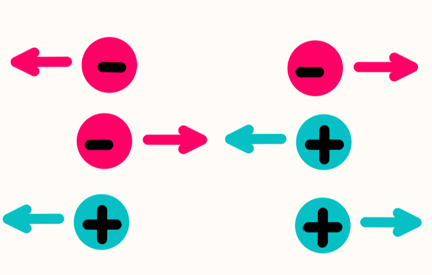

Si alguna vez has frotado un globo en tu cabello, seguramente has notado
que después tu cabello se mueve hacia el globo; esto es porque tu cabello
tiene algo que conocemos como carga eléctrica.
En el siglo XVIII,
Franklin (sí, el famoso ex-presidente de Estados Unidos) se puso a
investigar sobre ese tipo de fenómenos y descubrió que la materia
tiene una propiedad llamada carga, y esta carga puede ser positiva
o negativa.

Si has leído sobre la composición del átomo, sabrás que
este tiene tres partículas; pues resulta que los electrones tienen
carga negativa, los protones tienen carga positiva y los neutrones
tienen carga neutra.
En la mayoría de los objetos, estas cargas
están equilibradas, pero cuando los objetos interactúan entre
sí, los electrones se transfieren de un cuerpo a otro y entonces
uno de los objetos obtiene una carga negativa, porque ya no hay
equilibrio; ahora este objeto tiene un exceso de electrones.
Además,
Franklin
también descubrió que las cargas iguales se repelen y
las cargas positivas se atraen, como en el caso del globo y tu cabello.
En resumen, hay objetos que tienen carga positiva, otros que tienen
carga negativa, y estos se atraen o se repelen. Para conocer con qué tanta
fuerza sucede esto, utilizamos la Ley de Coulomb.
La unidad de medidicion de la carga es el Coulomb que se representa con una letra C, asi
podemos decir que una tenemos una carga de 2C (dos Coulombs) o una carga de -3C(menos tres Coulombs)
En física la fuerza es algo que hace que las cosas se muevan o dejen de moverse, por ejemplo, empujar una caja hace que esta se mueva. La fuerza tiene una magnitud y un sentido o dirección, para medir la magnitud de la fuerza usamos la unidad física de Newtons que equivale a 1kg·m/s 2 En cuanto a la dirección esta es normalmente representada por vectores.